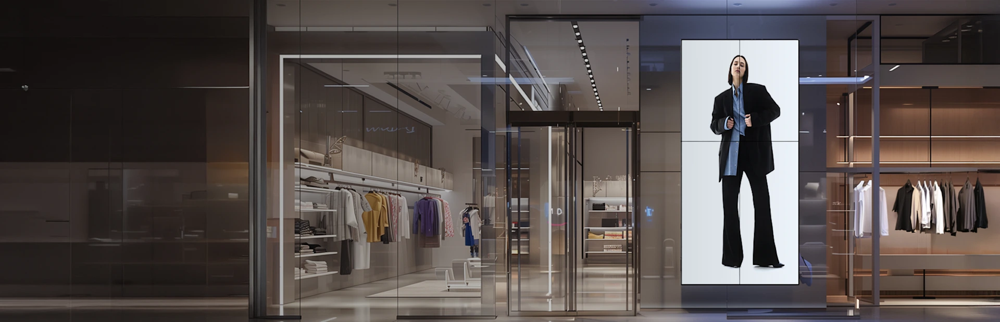

상품별 선택
의류·잡화·소형 상품 특성에 맞는 센서를 고릅니다.

매장·사업장 운영
상품별 태그, 출입구 감지 장비, 결제 후 해제 절차를 한 흐름으로 설계합니다.
의류·잡화·소형 상품 특성에 맞는 센서를 고릅니다.
출입 구조와 취약 구간을 확인해 감지 장비를 배치합니다.
접수·원격진단·출장점검·결과 안내로 관리합니다.
| 장비 | 역할 | 설치·사용 위치 |
|---|---|---|
| 하드택·라벨 | 상품 식별·감지 | 취급 상품별 선택 |
| 분리기·감성제거기 | 정상 판매 상품 해제 | 계산대 |
| 출입구 감지기 | 미해제 태그 감지·경보 | 고객 출입 동선 |
| 디스플레이·분석 | 안내·방문 흐름 파악 | 주요 고객 동선 |
감지 사양은 공식 소개 제품 기준입니다. 실제 성능과 설치 수량은 출입구 폭·상품·주변 환경에 따라 검토합니다.
취급 상품, 매장 출입구 폭, 계산대 위치와 분석하려는 항목을 알려주세요.
알고 있는 항목을 체크해 보세요.
아직 정하지 않은 내용은 상담하면서 확인할 수 있습니다.
0 / 4 항목 확인
상품 형태와 소재에 따라 하드택 또는 라벨 등 적합한 종류를 선택합니다.
계산대에서 태그를 분리하거나 센서를 비활성화하는 절차를 구성합니다.
공식 정보 참고: ADT캡스 매장관리 안내 · 확인일 2026.10.30
캡스 제휴 가입 상담센터 · 실제 제공 기능·설치·요금·보상 범위는 선택 상품과 현장 조건에 따라 확인합니다.